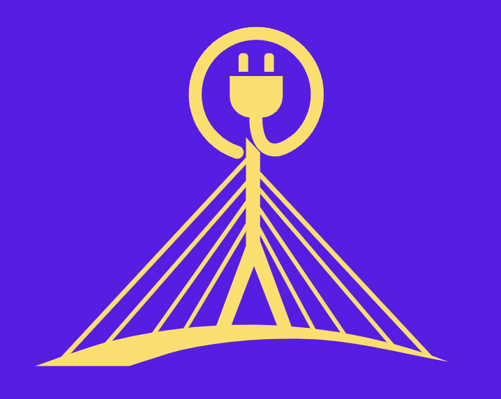

The Digital Divide in Education
According to Microsoft, "Just 1% of primary state schools provide devices that their pupils can take home, compared to 38% of private primary schools". As society continues
to progress digitally, education has become heavily reliant on the use of technology. However, not all students have access to these tools, creating a divide within schools
and communities. This gap can have vast effects on both academic performance as well as future opportunities. I made this website to inform about this digital divide and
some ways that it can be bridged in order to restore equality of opportunity between all students.

Feel free to browse through the sections to learn more about the digital divide in education.